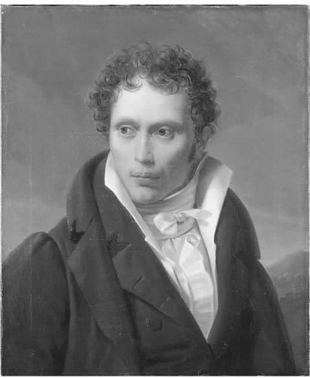

只要我们先认清贯穿叔本华全部哲学思想的主线，它就变得很容易把握了。这条主线就是他从康德那里发现的现象与物自体之间的区别。现象的世界由我们通过平常的感官经验和科学研究而认识的那些事物所构成，换言之，即经验世界。现象不可简单地理解为幻觉：构成我们经验知识的事物并非幻觉，而用相应的希腊语表示，它们就是组成世界的诸多现象。但是问题在于，整个世界是否仅由这些现象构成？我们是否应该认为“存在之物”可被我们的经验知识所穷尽？我们至少可以想象一个独立于我们的经验之外的现实，这就是康德所谓“物自体”的含义。
康德的成就在于表明知识是有限的：我们永远不可能了解世界的自体，而只能了解它向我们所呈现的状态，如科学家或普通感知者所为。因此，传统的形而上学者所标榜的认识上帝、灵魂之不朽或某种遍布全宇宙的超自然秩序的抱负注定无果而终。据叔本华的分析（见“康德哲学批判”，《作为意志和表象的世界》 [1] 第一卷附录，417—425），除了这项具有破坏性的成就之外，康德还增加了两项较有建设性的成就。其一是认为现象世界具有基本的和必然的组织原则，且这些原则能够被发现。其二是主张伦理学可以从现象领域中分离开来，且它不像科学那样构成知识：当我们审视人类自身所必然具有的行动性和是非观念时，我们所考虑的就不是事物在经验世界的存在方式了。
首先，让我们看看关于现象——我们所了解的这个世界——含有一个必然结构的思想。康德认为现象世界必须占据空间和时间。我们显然难以想象空间或时间的缺失，但康德更进一步，他辩称如果没有这二者，那么世界就根本不可知。类似的关系适用于原因和结果，以及事物能够在时间流逝中保持不变的原则。经验世界的规则是它必须包含持续恒久的事物，这些事物分布于时空之中，彼此发生系统的相互作用。康德认为，我们能够认识的经验世界不外乎此。然而，他最令人惊愕的断言是所有这些规则并非世界的自体所固有；它们描述的是仅当 我们能够去经历这个世界时它所必然显现的状况。所以空间和时间、原因和结果仅仅与事物向我们呈现的必然方式有关。如果去掉经验的主体，则世界的结构也将了无踪影。
来自康德的第二个建设性论点与我们对自身的观念有关。在努力认识世界的同时，我们还需要作出各种行动和决定，这些归根结底都属于道德领域的问题。康德认为，道德成立的前提是我们每个人都把自己视为一个理性的、受责任制约且有选择行动原则之自由的生物。没有一种基于经验的考察能够表明我们是此类纯粹理性的、自由的生物：甚至可以说，在物质世界中不存在这种事物。尽管如此，我们却不能没有关于自身的观念。所以，虽然我的知识局限于经验世界，但我绝不认为我的本性也受此局限。简言之，康德的观点就是，我必须认为在表象之外的我的自体 中，我是一个自由的和纯粹理性的主体。
当叔本华在哥廷根大学读书期间接触到康德哲学时，觉得它令人信服，但不完整。他接受现象与物自体之间的区别。在现象方面，他想对康德的观点作些修改，但欣然认同经验世界本身并不存在，而是被我们所强加的关于空间、时间和因果关系的规则赋予了结构。可是在物自体方面，他觉得康德的表述却含混不清。世界的自体究竟是什么？自我又是什么？这就是康德在区分了现象与物自体，并声称人们只能获得关于现象的知识之后留下的双重谜题。物自体的概念在德国学术界引发了对其他哲学问题的大讨论。叔本华的第一个老师舒尔策和他在柏林听过其讲座的费希特都是这场辩论中的主角。通过提出自己对这一谜题的解答，断言无论在整个宇宙还是人类微观世界中，物自体就是意志 ，叔本华是在回应当时一个炙手可热的问题，并在某种程度上聪明地利用了后康德时代为人熟知的一个观念。
从一开始，年轻的叔本华就不仅读康德的著作，还读柏拉图的著作，而正是从后者那里他接触到认识现象与“真实存在”之间不同之处的另一种方式。在柏拉图看来，“真实存在”是一组被称为理念或形式的不变的实体。个体事物是不完美的，它们来去匆匆，但这并不影响宇宙中的基本秩序，即由绝对和永恒的形式所构成的秩序。柏拉图认为，对人类的最大贡献莫过于获得对这些永恒形式——如正义本体、善的本体和美的本体——的认识。这样，人类的灵魂将被提升到一个超越一己之见和凡俗欲望的层次，达到对绝对价值标准的领悟，并从冲突和痛苦中获得解脱。在其思想发展的关键阶段，叔本华所臣服的就是这样一种远见。虽然康德的物自体本非人类知识所能企及，柏拉图的理念却是人类知识的最佳对象，但叔本华将二者的观点加以综合，形成了一种关于透过现象洞察物自体的柏拉图式见解。多年来他认为这是自己的一个重要发现：“柏拉图的 理念和康德的物自体 ……这两者如出一辙，此结论虽闻所未闻，却肯定无疑。”（《叔本华手稿》第一卷，377）尽管叔本华尚未看出这两位大哲学家的立场其实并不相同，但其思想中产生的融合已经获得了自身的能量。他相信，经验意识受空间、时间和因果关系的局限，是一种低级意识，如有可能我们应该渴望从中逃离出来。只有进入一种“更好”的意识，人类才能发现真正有价值的东西。
“更好的意识”一词仅在叔本华早期未出版的手稿中出现过。它并未得到集中的阐述，后来被他弃而不用。但是他后期有关艺术的价值和以隐忍精神超然于世的思想却与其早期观点一脉相承。例如，1813年他曾在笔记本上写道：
普通意识被看成是“苦难”的依附对象；只要我们能够突破把知识局限于表象的康德规则，就能进入一个使我们自身及我们“冥思”的直接对象都变得永恒的王国。叔本华认为这种“解放”可以在艺术中，以及在他称之为“圣人”之道的处世态度中找到。艺术天才和圣人均被认为是从一个超越普通的经验认识的立场来沉思现实的。近来有很多评论者贬低柏拉图的影响，把叔本华作为一个不甚正统的康德派哲学家对待。但是“更好的意识”却显然并非康德式思想；叔本华自认为康德和柏拉图在其哲学中合而为一，这个评价更为确切，虽然二者的体现方式颇为不同。
事实上，叔本华倾向于列举三方面的影响：“若不是《奥义书》、柏拉图和康德同时把光芒照进一个人的头脑，我想我的学说就不可能产生了。”（《叔本华手稿》第一卷，467）这第三个影响的情况如何呢？当叔本华邂逅《奥义书》的时候，他已经熟知柏拉图和康德的哲学思想，并形成了有关“更好的意识”的观念。他在1814年获得这些印度圣典（一个译自波斯文、取名Oupnek'hat的拉丁文版本），并在晚年称它们为“我生活中的慰藉”（《附录与补遗》第二卷，397）。我们可能注意到，在叔本华研读的印度典籍中有两个主要思想给他留下了深刻印象：其一是Mâyâ或虚幻，其二是包含在强大的梵文格言“tat tvam asi”（“此即汝”）中的个体与宇宙的同一性。叔本华在谈及我们的普通经验时往往指其未能穿透“虚幻的面纱”。这并非通常意义上的怀疑思想，即我们不可信赖感官作为了解物质世界的途径，而是指我们经验的物质世界不具有永恒性，不应该成为我们的终极信任之所在。叔本华认为，与艺术家和圣人所特有的不受时间制约的想象力相比，我们所经验并能以科学手段研究的物质世界没有真正价值，必须抛弃。悬置或否定自我与外在世界的区别（“此即汝”）是这种永恒想象力的特征之一。叔本华需要解决一旦人们抛弃普通经验意识，他们对世界和自我的认识将如何转变的问题，而在此过程中起到核心作用的观念就是丢弃视自我为单独个体的意识。他的部分思想与佛教有亲缘关系，这是他后来强调的一点，虽然它们之间是一种殊途同归而非影响的关系（《作》第二卷，169）。
当这些思想初步成形之时，叔本华正着手撰写他的博士论文，《论充足理由律的四重根》。在该文中他并没有提及“更好的意识”，而只是讨论支配着日常经验和推理的原则。他显然对自己得出的结论很满意，因为他后来几乎原封不动地保留了这些论文，并时常引用这篇论文。1847年他出版了该论文的扩充本，这也证实了他关于此文应被视为其完整思想体系之一部分的主张。我们现在通常所读的《四重根》就是后一个版本。
叔本华的《四重根》从单纯的充足理由律入手，它是与莱布尼茨和克里斯蒂安·沃尔夫相关联的18世纪学术传统中的惯用手段。该原则可以简洁地表述为：“任何事物都有其存在的根据或理由。”（《四重根》，6）没有孤立无依的事物；万物都处于相互联系之中，这正是它们存在的原因或解释。但是，叔本华认为，事物与某根据或理由发生关联的方式有四种，且它们与四种不同类型的解释有关。对此，他声称，前辈哲学家们无一作过清晰的区分。人们最熟悉的一类是因果解释或基于自然法则的解释，即我们以某事件或状态与另一事件或状态之间的因果关系来对其作出解释。第二类是我们以某判断赖以成立的依据，如经验式观察或可以从中推论出该判断的另一个真理判断，来解释该判断为真的理由。第三类是数学解释——比如，我们解释三角形为何具有那些特性。最后还有对人们所作所为的解释。我们以动机来解释行为，前者是后者的理由或原因，或兼而有之。叔本华认为，在所有这些情形中，我们讨论的都是人的意识所强加的关系，且在每一种情形下都是必然关系。因此，按他的表述，有自然法则必然性、逻辑必然性、数学必然性和道德必然性。一旦了解意识在处理这些关系时的活动特征，我们就能了解一切解释所采取的形式，并由此认识充足理由律的真正意义。让我们逐一介绍这四种关系。
《四重根》中篇幅最长的部分显然是对因果律的论述。意识所能把握的一类明显的客体是那些占据空间和时间、构成经验现实的可感知的具体事物。如前所述，空间和时间为经验现实提供基本的结构。但空间和时间是不可感知的；我们能够感知的是占满空间和时间的东西，在叔本华看来，也就是物质（《四重根》，46）。如果空间和时间二者缺一，则既不可能有特征各异的物质个体，也不可能有变化，因果关系也将失去适用的对象。根据因果律，物质世界的每一个变化都必有其原因，或用叔本华的话说，“每一种呈现的状态都一定是由此前的某个变化所引发或导致”（《四重根》，53）。该原则不容许有例外：我们通常所说的某个事件的原因只不过是发生在该事件之前的一个具体变化，而此变化本身又一定是由更早的变化所引起，依此类推。叔本华所用引发一词的含义，是指有规律地相继发生，或“与第一状态存在的频率相同”。原因和结果之间的关系是，只要第一状态出现，则第二状态将不可避免。这种关系被认为是必然关系。
叔本华对经验现实的性质有着简单而清晰的观点。物质个体存在于时空之中。物质能够与其他物质发生因果互动关系。一种物质所发生的每一个变化都是此前一种物质发生的某个变化的必然结果。可是，一种较为复杂的情况是，叔本华在对待物质问题上不是一个现实主义者，而是理想主义者：就是说，对他而言，没有意识就没有物质。与康德一样，他认为我们刚才所描述的整个结构仅仅作为向我们这些主体呈现的对象存在，而本身并不存在。当叔本华称时空中的经验事物为客体的时候，他指它们是某一主体 的客体 。在他的语汇中，“客体”是指在经验中或在主体的意识中遇到的事物。空间和时间是我们赋予经验的基本形式。所以如果没有主体，就不会有时空的物质占有者，物质状况之间存在的因果关系是我们作为主体所强加的。
在叔本华对感知的描述中，人的智性“创造”了由普通物质组成的世界（《四重根》，75），其途径是将因果律应用于我们的肉体感官所接收的感知印象。我们察觉到身体状况中发生的某种变化，接着我们的智性就运用因果律，投射出空间中一个“外在的”物质客体作为感知印象的因——这个投射物就是我们所谓感知的客体。所以因果律对叔本华来说具有双重重要性：它不仅主导物质之间的相互作用，而且为我们首先构建起对这些物质的认识。这个描述有一定的创造性，却又让人困扰。其一，肉体的感知印象从何而来？它们原本肯定是在智性活动之前由某种原因在身体内引发的，但叔本华并未讨论这个先在的原因是什么。其二，我们如何意识到最初的感知印象？后者不可能以物质个体（身体）发生的变化的形式而被意识所察觉，但如果不是这样，又何必要运用掌管物质变化的因果律呢？
叔本华认为意识的第二类客体由概念 组成。在他看来，概念是精神的表征，性质上属于派生的：他称之为“表征的表征”。初级表征是对物质世界中的事物——比如一棵具体的树——的经验；相反，树的概念 则是以省略每一次经验中的细节因素而形成的、代表许多同类事物的一般性表征。叔本华喜欢强调概念与直接经验永远相隔至少一步之遥，后者他以康德术语Anschauung（直觉或洞察）表示。他认为，一个对我们很有用处的概念，一定总是能够转换成经验。以此衡量，诸如存在、本质 或物 这些概念实用价值最低（《四重根》，147、155）。我们将看到，叔本华还持以下观点：在一些领域，如艺术和伦理学，抽象的概念化思考实际上有可能阻碍真正的洞见。
尽管如此，叔本华认为，对概念的把握是人类的一个显著特征，它使我们超越了其他动物所能达到的意识高度。在他看来，其他动物在很大程度上跟我们一样，也具有对时空中存在的物质的感知能力——他在一段非同寻常的论述中悲叹在“人类皮肤变为白色的西方”，我们已经不再承认我们与动物之间的亲缘关系，而把它们贬为“野兽或畜生”（《四重根》，146）。但是其他动物的确缺少概念表征，进而缺乏判断、推理、创造语言或认识过去和未来的能力。思考或判断是概念的基本功能。叔本华把判断称为概念间的组合或关联，虽然他并不十分清楚这种关联的具体内容。他对判断可以表达知识这一观点更感兴趣，正是在这一点上充足理由律再次发挥了作用。“如果一个判断表达的是一件知识 ，则它必有一个充分的根据或理由；因为这个特征，它就具有了为真 的属性。因而真理 就是一个判断对与之不同的某事物的指涉”（《四重根》，156）。若一判断为真且有基于其自身之外的某事物作为充分根据，则该判断等同于知识，这是一个为人熟知的观点。叔本华的简短评论似乎未将一判断之拥有充分根据与其为真的属性加以区分。他是否接受以下观念，即真理便是与事物的状况相符，无关乎是否有判断其为真的根据，这一点仍然含糊不明。

图5 叔本华：路德维希·西吉斯蒙德·鲁尔创作的肖像，1818年前后
叔本华所成功论证的是，为真的判断可以有各类不同的根据。它们可能基于另一个判断，比如当我们从一个真理辩论、断定或推导（《四重根》，157—158）另一个真理的时候。另一方面，它们可能是“经验真理”，其根据不是基于另一个判断，而是源于经验。例如，我们作出“树上有雪”这个判断的理由可能是出于感官的见证。而在“树上有雪。雪是一种白色的物质。所以，树上有一种白色的物质”这个三段论中，最后一个判断为真的根据只不过基于前两个前提的真实性。叔本华把这称为“逻辑的”或“形式的”真理，它仅指基于演绎而不是观察的真理。按照他的描述，还有其他两类真理，他称之为先验真理和元逻辑真理。它们分别出现于当判断建立在经验状况之上或一般的思想状况之上这两种情况。一个著名的先验真理是“万事有因”，它既非基于观察也非基于从其他真理的演绎，而是一切经验所依据的基本原则。（叔本华在这一点上紧随康德。）元逻辑真理一般被认为是这样一种判断，即如果我们试图违反它，我们就完全不能正常思考。叔本华给出的一个例子是“不能同时承认又否认谓项为主项的属性”：比如，我们不能认为“雪既是白色又不是白色”。叔本华声称，充足理由律本身就是这样一种真理，尽管在一些伪装下，特别是在因果律的伪装下，它以先验真理的形式出现。
叔本华在《四重根》中给出的第三类客体仅由空间和时间构成。我们又一次离康德很近，他认为我们不仅能了解充满空间和时间的具体事物，而且能了解空间和时间本身的基本特性。根据这种观点，几何和算术是有关空间位置和时间顺序的知识体系，但它们既非科学的经验知识，也非纯粹的逻辑演绎。基于这种在今天会受到质疑的几何与算术观点，康德得出了结论，认为我们一定能以一种纯粹的、非经验的思维方式把握空间与时间。叔本华亦步亦趋，提出了他的充足理由律的第三类形式。比如，一个三角形具有三条边与它具有三个角之间的关系是彼此互为基础、互为充分理由。但叔本华争辩说，这种关系不是因果之间的关系，也不是一种知识与其论证之间的关系。我们不仅必须区分“成为”的理由（基于原因的变化）和“知晓”的理由（基于论证的知识声称），还必须区分“存在”的理由。如果说一个三角形有三个角是因为它有三条边，我们所指的理由不过是空间或其中一个面的存在方式。
充足理由律的最后一种形式仅适用于每个主体的单一客体。我们每个人都能意识到自己是意志的主体。我们经历着自己的“想要”和“作决定”的状态，而且总能问“为什么？”（《四重根》，212）。我们假定我们的意志行为有其先在的理由，它能解释我们的行动或决定。这种先在的东西就是叔本华所称的动 机 ，其运作原则就是他所谓的“动机律”，或行动的充足理由律原则。它认为每件意志行为都能用某种动机来加以解释。动机与意志行为之间的联系为因果关系，与普遍适用于物质世界变化的因果关系一样。因此，如叔本华所言，动机是“从内部看到的因果律”（《四重根》，214）。
叔本华之前的哲学传统对不同的解释形式没有作出始终如一的区分，《四重根》是把它们区别开来的一次非凡而执着的尝试。我们完全可能认同他的请求，即从今以后“每个哲学家，当其在推断中把结论建立在充足理由律的基础上，或只要谈及一个理由的时候，都应被要求说明他所指的是何种理由”（《四重根》，233）。然而，厘清支配着我们的经验与推理的框架仅仅是叔本华的任务之一。他在1847年的扩充版中说，他所讨论的关系无一适用于构成我们经验的现象之外的范围：充足理由律的任何一种形式均不能适用于被认为是物自体的世界（《四重根》，232—233）。他还提醒我们，“崇高的柏拉图”把现象现实降格为“总是昙花一现，却从未真正而真实地存在过”的东西（《四重根》，232）。
在1813年的笔记本中，叔本华回到原来的任务，想揭示在所有这些主体强加的联系模式之外有何物。于是有了一个十分重要的发现：随着考察的深入，有一点明朗起来，即揭示物自体的本性与厘清“更好的”柏拉图式意识是两项截然不同的工作。物自体是一个隐藏的本质，它在我们强加于经验客体之上的秩序下运作。驱使他前进的动力也正是他自己的内在本性——可以说是在他内心涌动着的世界。他把这种隐藏的本性称为意志，并把它与普通生活所施加的“苦难”相关联。与此相反，只要他能够不再是 这个意志，不再强加一切主观的联系形式，那么同样的世界将呈现出完全不同的面貌：它将笼罩在永恒和客观的荣耀之下，以“柏拉图理念”的华美盛装展现在他的面前。叔本华哲学的真正成形以他廓清物自体（意志）与“柏拉图理念”之间的区别为标志：前者指经验世界所包藏的昏暗现实，在这个世界中个体辛苦劳作并试图理解事物之间的联系；后者指一种值得追求的非凡境界，在那里一切联系都将解除，现实更为光明，无须苦心积虑地思考。